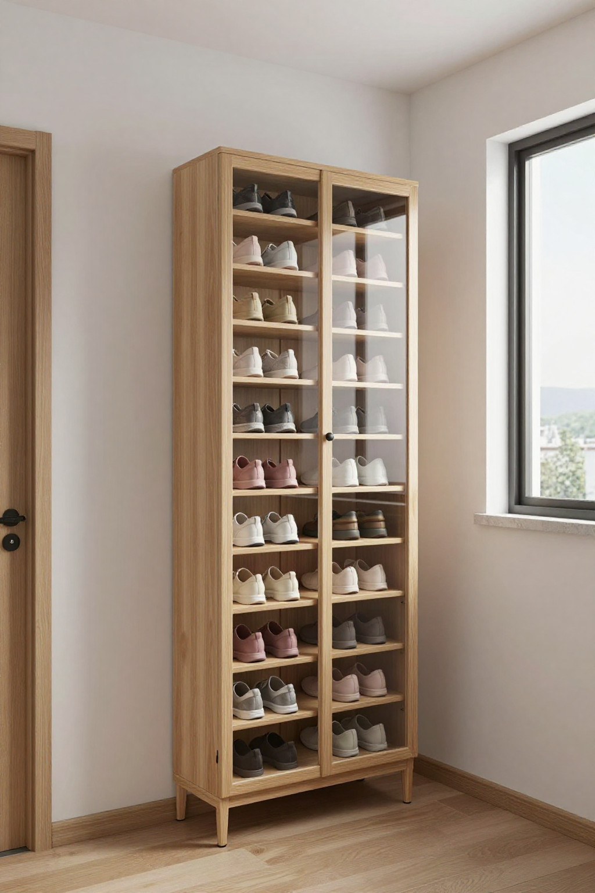
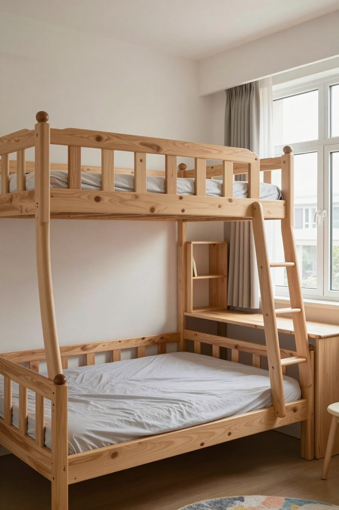
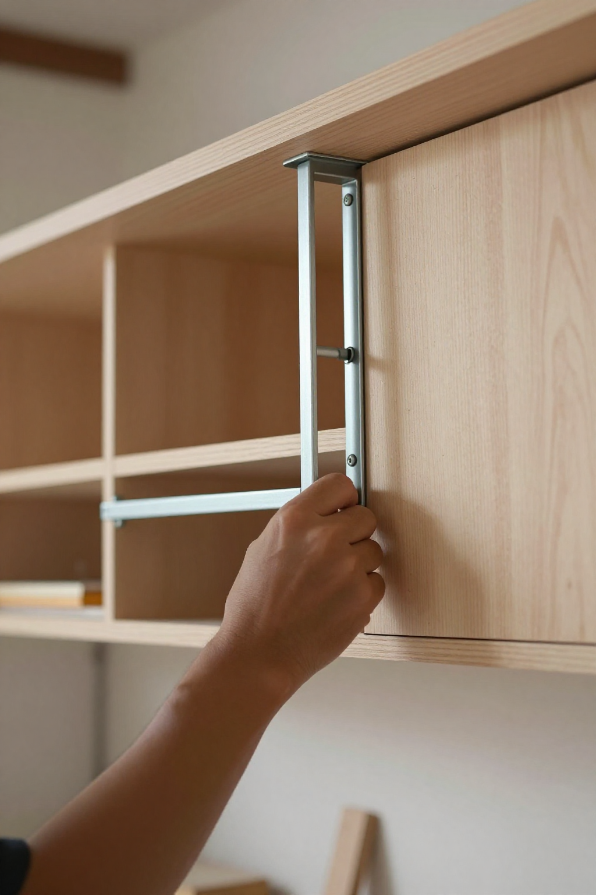
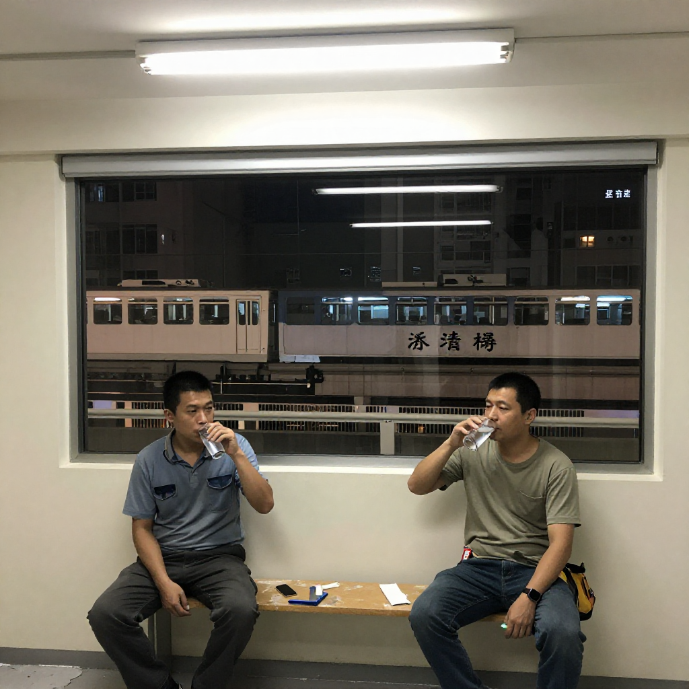

屯門欣寶路簡屋入伙嗰晚

📍 場景：屯門欣寶路簡約公屋 18 層四座｜主講：張丹楓（8 年全屋訂造）｜整理：雲蕾｜日期：2026 年 9 月 21 日｜業主：余婆婆 + 杜先生一家（化名）｜WhatsApp 報價：852 5190 2328
序幕：何局長口中嘅「豐收年」
九月十九號朝早，我喺地鐵車廂見到房屋局何永賢局長嗰段 Facebook 直播——戴尚誠副局長帶住一班街坊去屯門欣寶路簡屋睇樓。鏡頭前面，余婆婆企喺示範單位入面，手揈揈話「個間隔幾靚」，杜先生一家四口就坐喺廳度笑。旁白寫住：5,600 個單位，第三季陸續入伙，月租 900 至 2,010 蚊。
雲蕾喺我隔籬問：「丹楓，呢啲簡屋單位，做唔做到訂造傢俬？」
我答：「簡約公屋嘅間隔，深得街坊歡心，但係房署規定——唔可以打實螺絲、唔可以亂改間隔、唔可以裝固定層板。所有訂造，都要用掛碼、玻璃膠、預埋十年後點拆。」
雲蕾嘆咗口氣：「呢句說話，我哋行內講咗三十年。到咗簡屋，仲係要再講一次。」
我哋兩個望住窗外個個屯門站牌落車，心諗：今晚要去欣寶路簡屋嗰個新單位度——余婆婆同杜先生一家，分別收到入伙通知。余婆婆原本住大埔一個 200 方呎劏房，月租 6,000 蚊；杜先生一家由土瓜灣 120 方呎劏房搬出嚟，依家兩個單位同層，我哋上門幫佢哋做訂造。

第一幕：余婆婆嗰個企身鞋櫃
開門嗰陣，余婆婆第一句話係：「師傅，我個細單位得 14 平方米，你哋裝到一個鞋櫃放我 30 對鞋，已經夠喇。」
我蹲低數咗數：12 對布鞋、6 對皮鞋、4 對波鞋、8 對拖鞋。30 對。
「余婆婆，14 平方米嘅簡屋，鞋櫃唔可以做大。」我喺記事簿畫個草圖：「做一個到頂企身鞋櫃，掛牆唔打地腳，闊度 60 cm、深度 35 cm、高度 220 cm。底層留 30 cm 離地，放你嘅濕遮同掃地機械人；中間 6 層活動層板，每層高度可以調；頂層兩格放雜物。」
余婆婆望住個圖：「咁 30 對鞋點放？」
「6 層 × 5 對鞋 = 30 對。布鞋、皮鞋疊兩層放；波鞋、拖鞋一對一格。你孫仔放假返嚟，球鞋都可以放。」
我寫低單據：「E0 生態板，掛碼 6 個，玻璃膠封地腳。預埋十年後換板——掛碼可以拆、層板可以換。」
「我住咗大埔嗰個 200 方呎劏房 12 年，間屋乜都換唔到——牆係人哋嘅、窗係人哋嘅、門口嘅鞋櫃係人哋嘅。依家呢度，終於有自己嘅訂造。」
雲蕾寫低：「余婆婆原話：『終於有自己嘅訂造。』」

第二幕：杜先生一家四口嘅兒童房
行過去隔壁，杜先生一家四口剛收完一箱玩具。杜太見到我哋，第一個問題：「師傅，我哋兩個女，姐姐 9 歲、妹妹 6 歲。簡屋單位三至四人房，訂造雙人兒童床，唔知塞唔塞得落？」
我量過房間：3 米 × 2.7 米 = 8.1 平方米。
「塞得落，但要訂造。」我畫圖：「訂造 L 型上下床，姐姐睡上格、妹妹睡下格——下格床頭靠牆位裝一張 80 cm 闊書枱，兩個女可以一齊做功課。床尾預埋 60 cm 衣櫃，三格層板放摺衫，底層兩個抽屜放書包。」
杜太問：「咁樣兩個女會唔會爭位？」
「L 型嘅好處就係——上下床 + 書枱 + 衣櫃，全部靠牆擺，房中間留返 1.5 米 × 1.5 米嘅活動空間。姐姐妹妹可以坐地下玩、可以攤開畫畫、可以一齊睇書。」
杜太笑住：「咁我哋大人瞓廳度——」
杜先生即刻搭嘴：「唔好咁講啦。我哋簡屋三至四人單位，廳可以擺到一張碌架床嘅下格，加一個衣櫃。姐姐同妹妹瞓房，我哋瞓廳。」
我寫低單據：「L 型上下床 E0 生態板，水性漆，書枱同衣櫃一體訂造。預埋十年後——兩個女大個，書枱可以拆，衣櫃層板可以加。」
「我哋由土瓜灣 120 方呎劏房搬出嚟，嗰陣兩個女要喺床上面做功課、喺地下食飯、喺走廊沖涼。依家兩個女終於可以喺自己書枱做功課——呢個就係簡屋嘅意義。」

第三幕：簡屋訂造嘅三條鐵律
收工前，我同雲蕾坐喺欣寶路簡屋嘅社區中心度飲水。社區中心有幾位居民經過，望住我哋件工程背心，都笑住打招呼。
雲蕾問我：「丹楓，你哋做訂造咗咁多年，簡屋訂造有咩唔同？」
我數三條鐵律：
第一條，唔可以打實螺絲。簡屋間隔牆係預製組件，打實會影響結構。要用掛碼吊牆、玻璃膠封地腳，將來換板、換門唔使鑽牆。
第二條，材料要寫清楚。E0 同 E1 板每張差幾十蚊；防火板同普通板差百幾蚊。單據要列明牌子、厚度、產地、防火等級。余婆婆同杜先生都唔識揀料，但佢哋識睇單據。
第三條，預埋十年後點拆、點換。簡屋本身係過渡房屋，業主住五至七年就要輪候上樓。訂造時預埋掛碼、活動層板、玻璃膠封地腳——將來搬走，拆出嚟可以再用，唔使丟入堆填區。
「裝修佬最怕就係『固定』兩個字。十年唔拆嘅嘢，唔好打實；十年會拆嘅嘢，事先留位。」
雲蕾寫低：「簡屋訂造三條鐵律：唔打實、寫清楚、預埋拆。」
尾聲：搭車要正價，訂造要實淨
收工，余婆婆攞住兩個柑出嚟：「你哋帶返去啦，今朝行過樓下街市見到啲柑幾靚，買咗兩個送你哋做生果。我住咗大埔嗰個 200 方呎劏房 12 年，終於上到簡屋。你哋幫我裝得實淨，我自然會回報你。何局長講得啱——簡屋係過渡，但訂造可以長用。你哋做嘅嘢，就係要對得住十年、二十年後嗰個拆櫃換板嘅人。」
「唔使客氣，余婆婆。你住咗十二年劏房，依家上到簡屋，呢度就係你嘅屋。十年後你哋搬上公屋，呢組鞋櫃如果跟得郁，我哋都可以幫你拆去新屋。」
杜先生一家送我們到樓下電梯。杜先生同我講：「張師傅，我哋由土瓜灣劏房搬出嚟嗰陣，乜都冇；依家兩個女終於有書枱、有自己嘅床。訂造呢啲嘢，十年後我們可能會搬上公屋，但呢十年嘅生活，係真實嘅。」
我哋搭輕鐵返屋企。車廂外面就係欣寶路簡屋嗰四座 18 層——鮮黃、鮮橙、鮮藍、鮮綠。鮮色嘅外牆，係基層市民嘅希望。
我諗起余婆婆嗰句「終於有自己嘅訂造」，諗起杜先生嗰句「呢十年嘅生活，係真實嘅」。
簡屋係過渡，但訂造嘅心意唔係過渡。
我哋裝修佬就係要記住：每一塊板、每一支膠、每一口漆，裝落人哋屋企，就係裝落人哋嘅命。屯門欣寶路嘅街坊，喺呢度住五至七年；之後搬上公屋嘅時候，希望佢哋仲記得——曾經有一對夫妻檔裝修佬，幫佢哋做過一個掛碼吊牆、玻璃膠封地腳嘅訂造。呢啲細藝，就係簡屋嘅價值。
搭輕鐵返屋企，我特登用八達通拍正價出閘。搭車要正價，訂造要實淨——呢啲唔係大道理，係細藝。
「簡屋係過渡，但訂造嘅心意唔係過渡。」
——余婆婆、杜先生口述，張丹楓筆記，雲蕾整理，二〇二六年九月二十一日，屯門欣寶路簡屋

❓ 屯門簡屋三問
Q1：簡約公屋訂造傢俬有咩限制？點解唔可以打實螺絲？
簡約公屋間隔牆係預製組件，房署規定唔可以亂改間隔、唔可以裝固定層板。打實螺絲會影響結構，十年後想拆都拆唔到。香港做法係訂造到頂大櫃用掛碼吊牆、地腳用玻璃膠封唔打實，將來換板、換門、換五金，唔使鑽牆。屯門欣寶路簡屋每個單位三至四人房，訂造時要預埋五至七年後搬走嘅拆裝需要。
Q2：簡屋訂造用 E0 定 E1 板？點解要寫清楚單據？
簡屋住戶多數有小朋友或者長者同住，E0 板甲醛釋放量 ≤ 4 毫克 / 100 克，E1 板 ≤ 9 毫克，相差一倍。E0 比 E1 每張貴約 30 至 60 蚊，防火板同普通板差百幾蚊。訂造時單據要列明牌子、厚度、產地、防火等級——呢啲就係十年後維權嘅憑證。簡屋住戶未必識揀料，但佢哋識睇單據。
Q3：簡屋居民最怕訂造咩陷阱？點解？
最怕兩種陷阱。第一種係「廉價膠板」——表面睇係 E0，實際係 E1 溝埋去十年中段，兩年後櫃門關唔實、軟包塌晒。另一種係「固定層板」——打實螺絲落預製間隔牆，十年後業主搬走想拆都拆唔到，要連成塊板成幅牆一齊拆。識揀嘅住戶，會慢慢對單據、問清楚用料、肯花時間。呢類客人先係裝修佬最想接嘅客人。
本文配圖均為 AI 場景示意圖，僅供場景參考，並非真實工地照片或業主影像。
想知你個單位裝修要幾錢？
📱 一鍵 WhatsApp 張丹楓